Paper Accepted at ACM EC 2026
1 June 2026
A. Baychkov, M. Brill, and M. Utke. Mixed Voting Rules for Participatory Budgeting. arXiv
Accepted at the 27th ACM Conference on Economics and Computation (EC 2026).
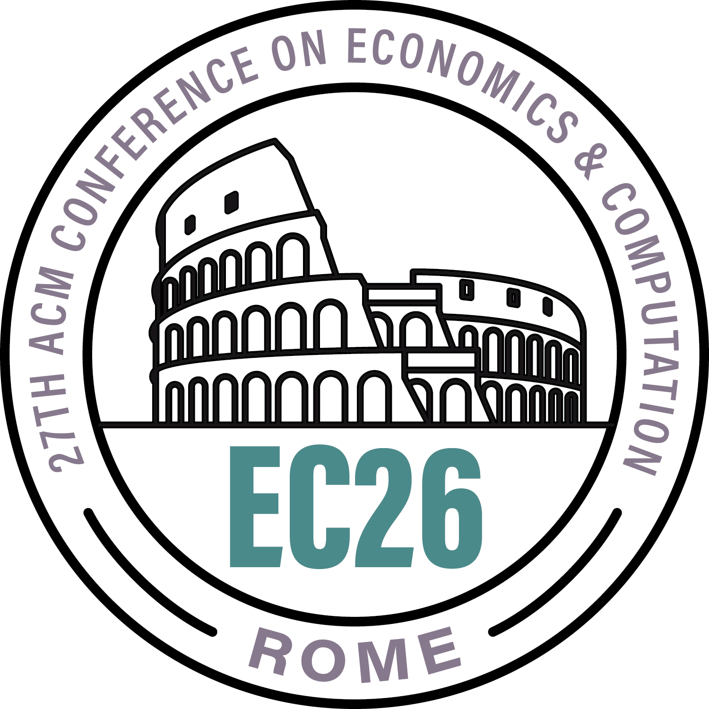
Paper Accepted at IJCAI 2026
1 May 2026
M. Brill, R. Colley, A.-M. George, G. Lisowski, G. Papasotiropoulos, and U. Schmidt-Kraepelin. Cycles in Liquid Democracy: A Game-Theoretic Justification. Accepted at the 35th International Joint Conference on Artificial Intelligence (IJCAI-ECAI 2026).
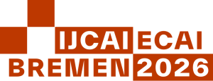
Warwick ➡️ Oxford
1 January 2026
I moved to the University of Oxford, where I’m an Associate Professor at the Department of Computer Science and a Tutorial Fellow at Oriel College.
2 Papers Accepted at AAAI 2026
7 November 2025
The following papers have been accepted at AAAI 2026:
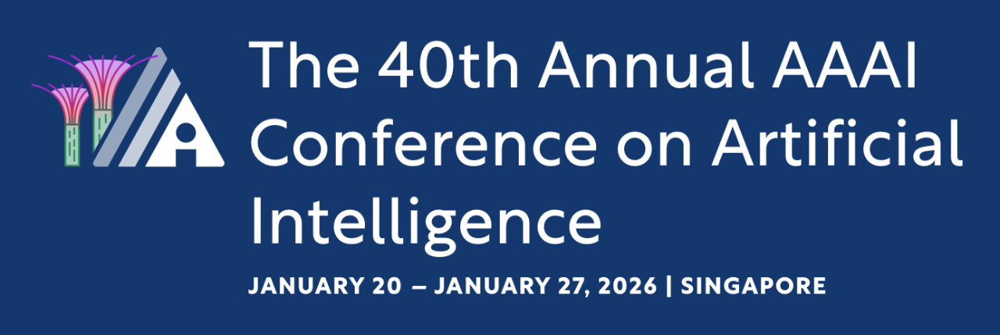
Ulrike Wins Honourable Mention
4 September 2025
Congratulations to Ulrike for receiving an honorable mention for the 2023 AAAI/ACM SIGAI Doctoral Dissertation Award. (Yep, they only announced that now.)
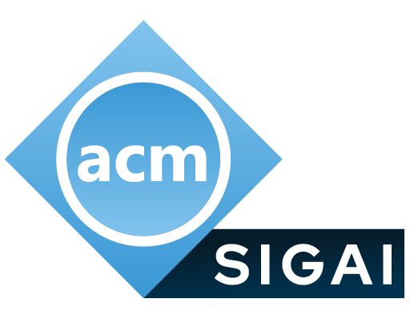
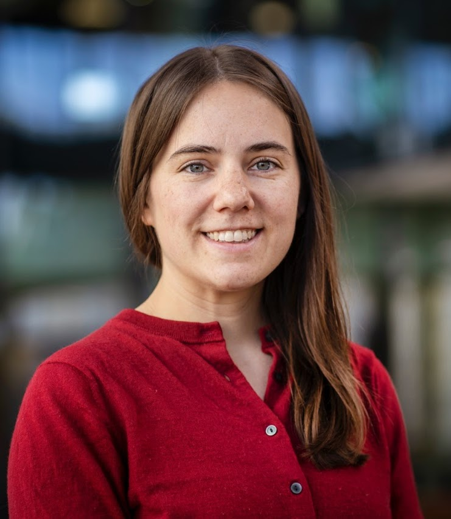
Jannik Wins EurAI Dissertation Award
1 September 2025
Congratulations to Jannik Peters for winning the 2024 dissertation award by the European Association for Artificial Intelligence (EurAI)!


New Paper in AIJ
27 June 2025
A. Imber, J. Israel, M. Brill, and B. Kimelfeld. Approval-Based Committee Voting under Incomplete Information. Artificial Intelligence, Volume 347, 104381, 2025. Available here.
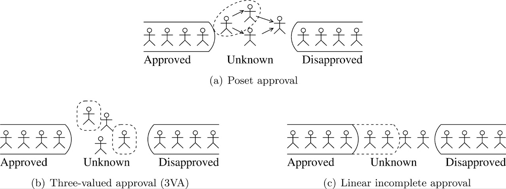
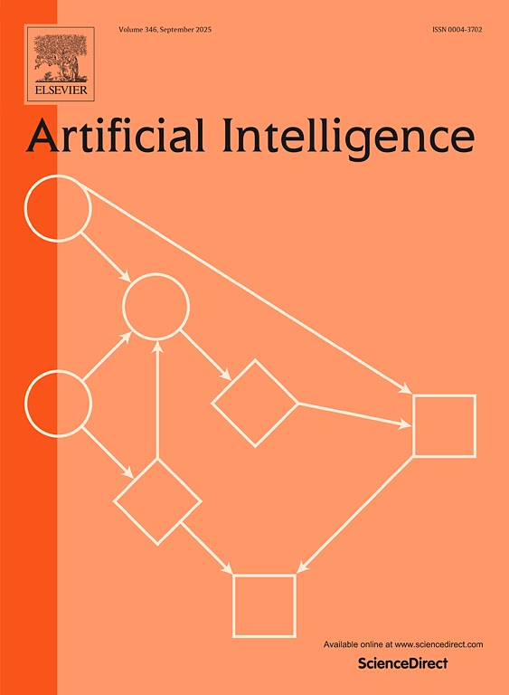
Talk at EDDY
12 June 2025
I gave a talk on “Cycles in Liquid Democracy: A Game-Theoretic Justification” at the 2nd Conference of the European Network for Digital Democracy (EDDY-2025) in Paris. Slides are here.
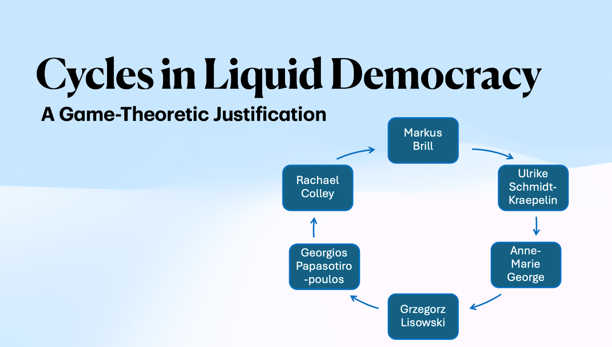
Open Positions
21 May 2025
There are multiple open positions, including one postdoc position (deadline: June 15th) and one research assistant position (deadline: June 1st) at the University of Warwick, within the project Aggregating Safety Preferences for AI Systems: A Social Choice Approach (ASPAI). The project is funded by the Advanced Research + Invention Agency (ARIA) within the Safeguarded AI programme.
For details, see the ASPAI project homepage.
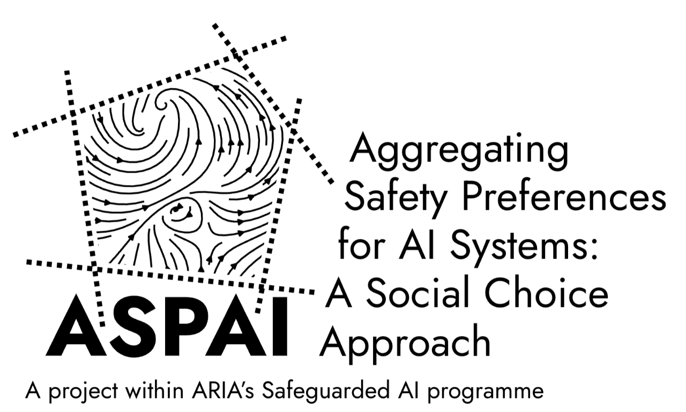
ARIA Safeguarded AI Grant
24 April 2025
I have been awarded a grant from the Advanced Research + Invention Agency (ARIA) within the Safeguarded AI programme. Our project is titled Aggregating Safety Preferences for AI Systems: A Social Choice Approach and team members include Niclas Boehmer (HPI Potsdam), Paul Goldberg (University of Oxford), Davide Grossi (University of Groningen), Jobst Heitzig (Potsdam Institute for Climate Impact Research and Zuse Institute Berlin), and Wes Holliday (UC Berkeley).
See also the announcement by ARIA. Postdoc positions will be advertized soon!
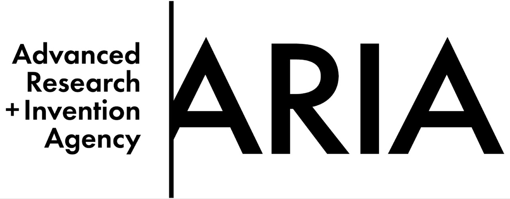
Structural Democracy Fellowship
19 March 2025
I have been awarded a Structural Democracy Fellowship, funded by the Crankstart Foundation and awarded via Moon Duchin’s Data and Democracy Lab (also known as MGGG).
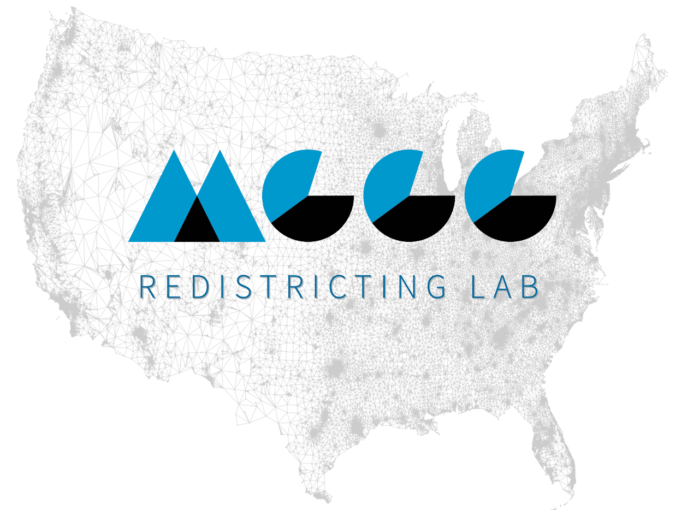
Special Issue Published
1 February 2025
The Special Issue on Fair Public Decision Making: Allocating Budgets, Seats, and Probability of Social Choice and Welfare has been published and contains the following three papers:
- M. Brill, J. Israel, E. Micha, and J. Peters. Individual Representation in Approval-Based Committee Voting. Social Choice and Welfare, 64(1–2):69–96, 2025. link pdf
- N. Boehmer, M. Brill, and U. Schmidt-Kraepelin. Proportional Representation in Matching Markets: Selecting Multiple Matchings under Dichotomous Preferences. Social Choice and Welfare, 64(1–2):179–220, 2025. link pdf
- J. Israel and M. Brill. Dynamic Proportional Rankings. Social Choice and Welfare, 64(1–2):221–261, 2025. link pdf
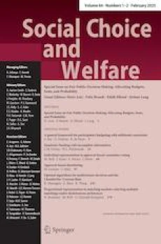
Jannik Wins Victor Lesser Distinguished Dissertation Award
19 December 2024
Jannik Peters has won the 2024 Victor Lesser Distinguished Dissertation Award! 🎉
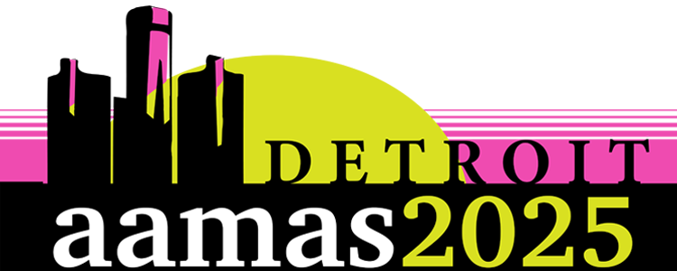

PhD Defense Jannik
13 August 2024
Jannik Peters successfully defended his PhD thesis. Congratulations!!! 🎉
Thanks to committee members Ioannis Caragiannis, Nisarg Shah, and Piotr Skowron!
Talk at SSCW
3 July 2024
I gave a talk at the 17th Meeting of the Society for Social Choice and Welfare. Slides available here.
Talk at ICMS Workshop
11 June 2024
I gave a talk at the ICMS workshop on Mathematics of Voting and Representation in Edinburgh. The slides are available here.
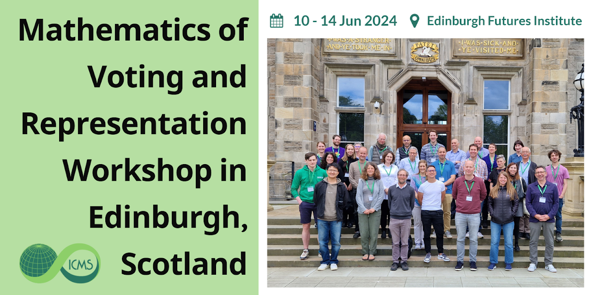
Talk at Online SCW Seminar
16 April 2024
I gave a talk at the Online Social Choice and Welfare Seminar Series on the paper Robust and Verifiable Proportionality Axioms for Multiwinner Voting (joint work with Jannik Peters). The video is available here.
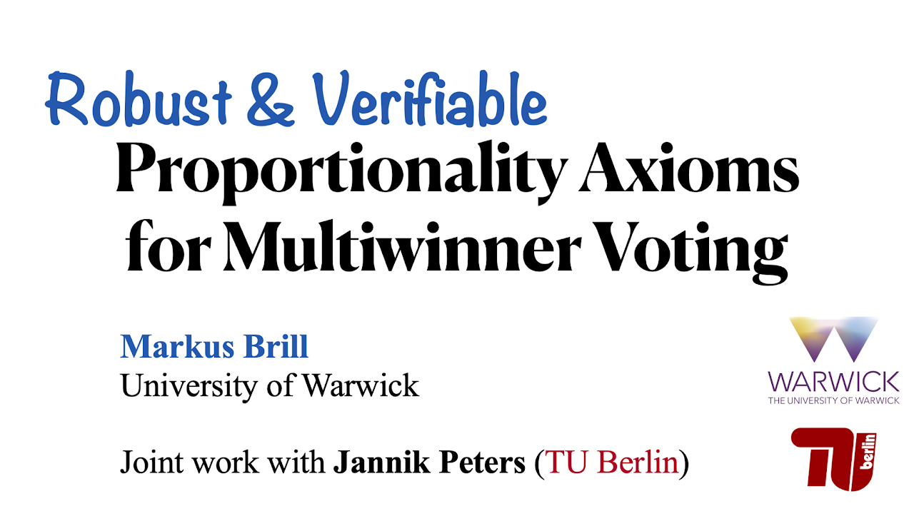
Talk at EDDY Conference
12 April 2024
I gave a keynote talk at the 1st Conference of the European Network for Digital Democracy in Rotterdam.
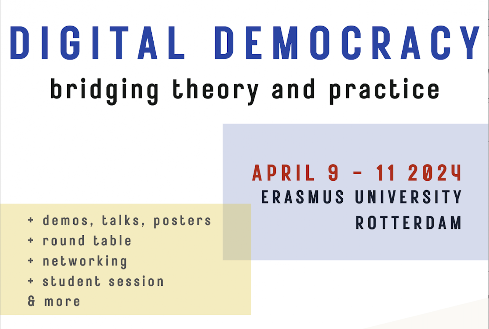
Niclas Wins Victor Lesser Distinguished Dissertation Award
2 April 2024
Congratulations to Niclas for winning the 2023 Victor Lesser Distinguished Dissertation Award! He will present his thesis at AAMAS 2024.
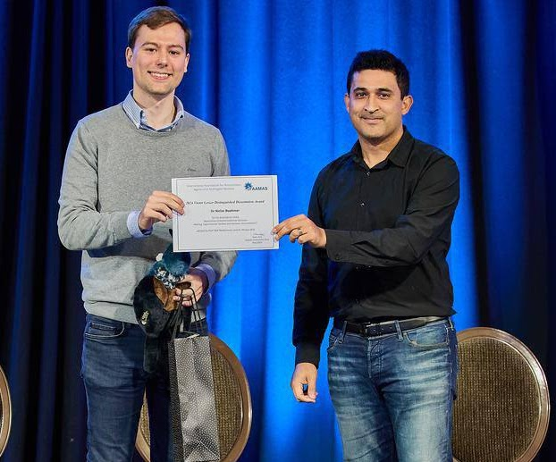
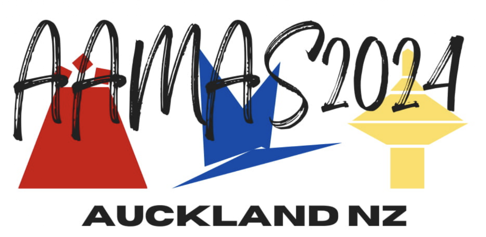
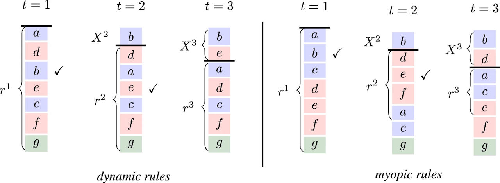
Special Issue Published
6 March 2024
The Special Issue Mathematical Optimization for Fair Social Decisions: A Tribute to Michel Balinski of Mathematical Programming has been published and contains the following three papers:
- Markus Brill, Rupert Freeman, Svante Janson and Martin Lackner. Phragmén’s voting methods and justified representation. Mathematical Programming, 203(1–2):47–76, 2024. link pdf
- M. Brill, P. Gölz, D. Peters, U. Schmidt-Kraepelin, and K. Wilker. Approval-based apportionment. Mathematical Programming, 203(1–2):77–105 2024. link pdf
- L. Sánchez-Fernández, N. Fernández García, J. A. Fisteus, and M. Brill. The Maximin Support Method: An Extension of the D’Hondt Method to Approval-Based Multiwinner Elections. Mathematical Programming, 203(1–2):107–134, 2024. link pdf
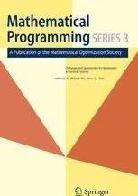
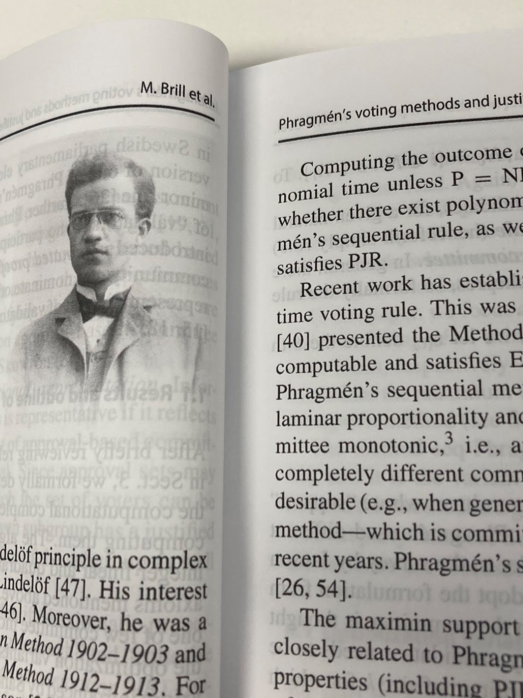
PhD Defense Jonas
19 December 2023
Jonas Israel successfully defended his PhD thesis. Congratulations!!! 🎉
Thanks to committee members Jerome Lang, Piotr Skowron, and Julia Stoyanovich!
3 Papers Accepted at AAAI 2024
10 December 2023
The following papers have been accepted at AAAI 2024:
- N. Boehmer, M. Brill, A. Cevallos, J. Gehrlein, L. Sánchez-Fernández, and U. Schmidt-Kraepelin. Approval-based committee voting in practice: A case study of (over-)representation in the Polkadot blockchain. arxiv
- M. Brill and J. Peters. Completing Priceable Committees: Utilitarian and Representation Guarantees. arxiv
- A. Imber and J. Israel and M. Brill and H. Shachnai and B. Kimelfeld. Spatial Voting with Incomplete Voter Information. arxiv
Talk in Karlsruhe
12 October 2023
I gave a talk at the Conference on Voting Theory and Preference Aggregation in honor of Klaus Nehring’s 65th birthday.
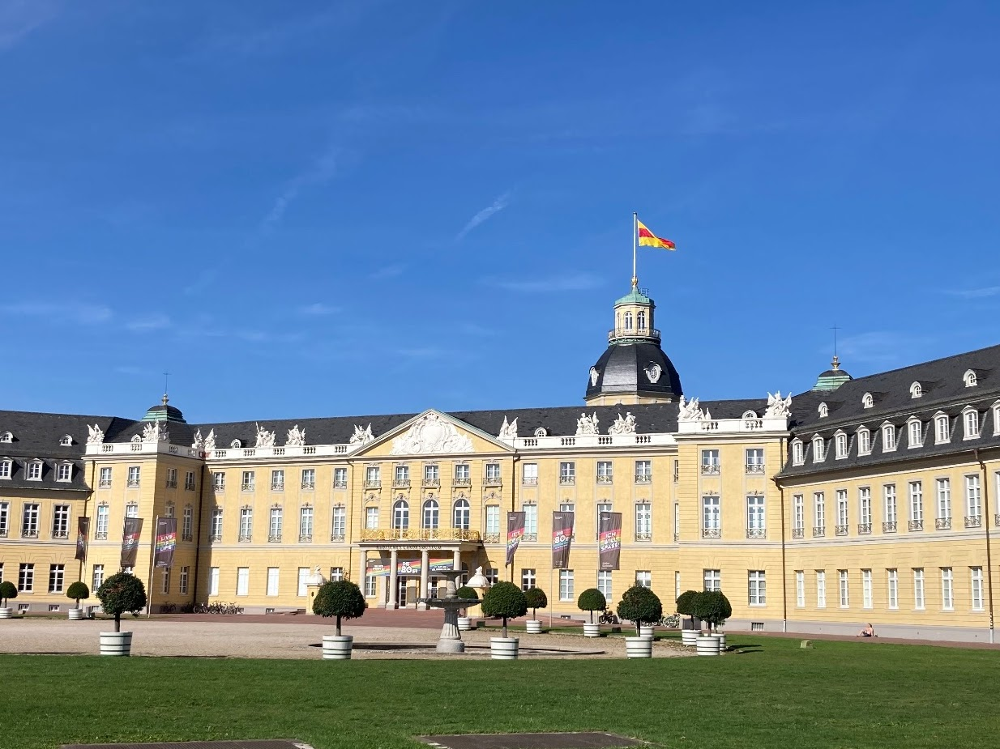
Ulrike Wins EurAI Dissertation Award
15 September 2023
Congratulations to Ulrike for winning the 2022 dissertation award by the European Association for Artificial Intelligence (EurAI)! She will present her thesis at ECAI 2023.
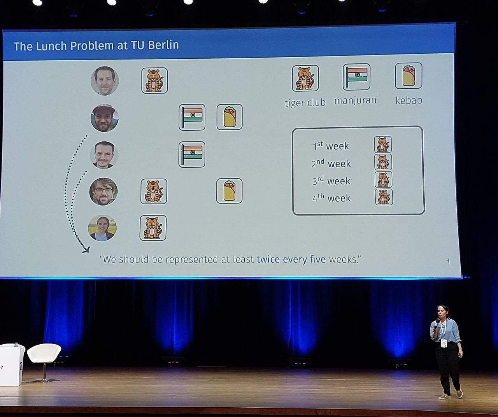
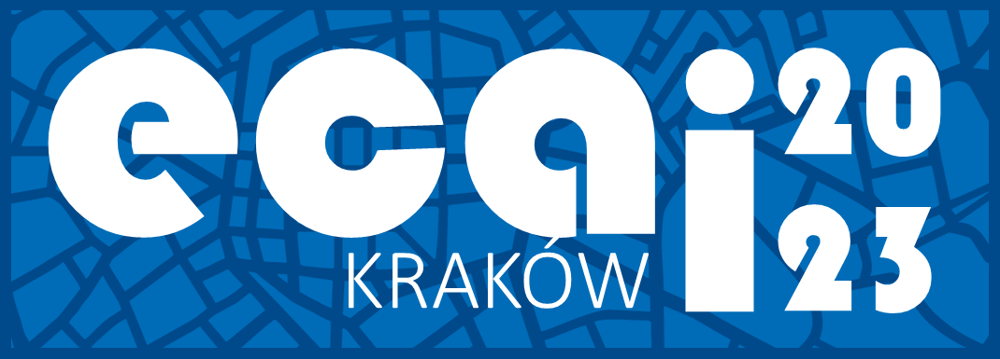
PhD Defense Niclas
26 July 2023
Niclas Boehmer successfully defended his PhD thesis. Congratulations!!! 🎉
Thanks to committee members Piotr Faliszewski, Jerome Lang, and Kate Larson!
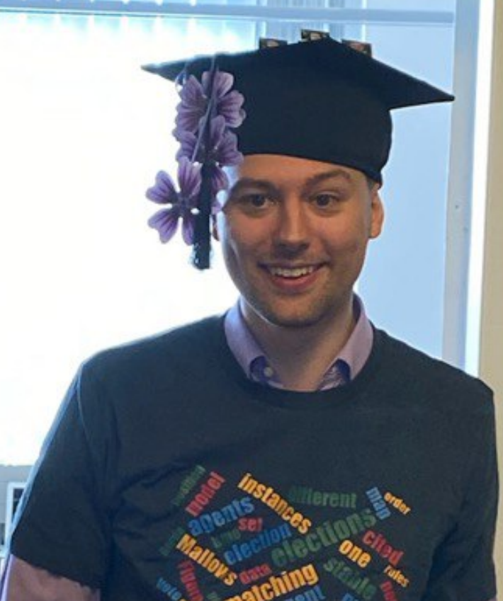
Workshop at TU Berlin
14 July 2023
I’m organizing a workshop on Computational Social Choice. The workshop will take place at TU Berlin on Thursday, July 27th, 2023. More information here.
Paper Accepted at EC
1 May 2023
M. Brill and J. Peters. Robust and Verifiable Proportionality Axioms for Multiwinner Voting. Proceedings of the 24th ACM Conference on Economics and Computation (ACM-EC), 2023. Forthcoming. arxiv
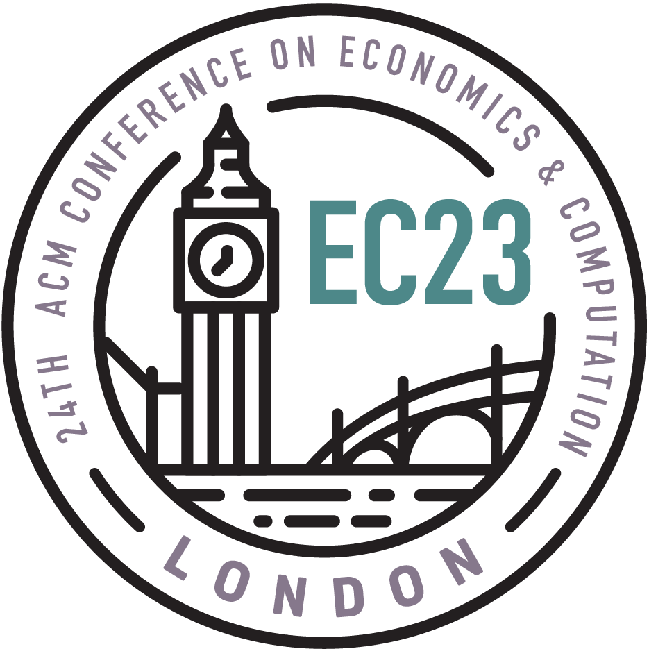
Paper Accepted at IJCAI
19 April 2023
M. Brill, E. Markakis, G. Papasotiropoulos, and J. Peters. Proportionality Guarantees in Elections with Interdependent Issues. Proceedings of the 32nd International Joint Conference on Artificial Intelligence (IJCAI), 2023. Forthcoming.
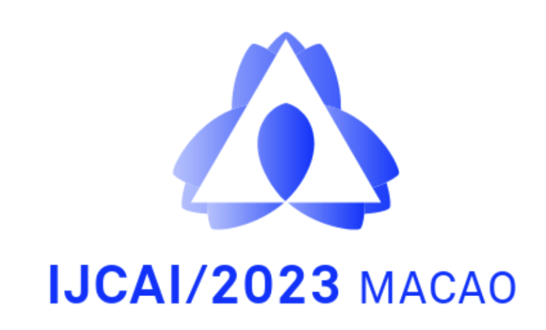
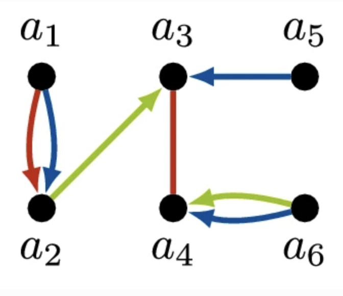
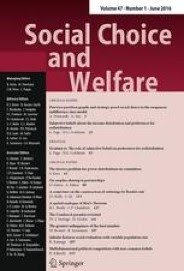
Paper Accepted at Mathematical Programming
6 March 2023
The following paper has been accepted for the Special Issue of Mathematical Programming, Series B, on Mathematical Optimization and Fair Social Decisions
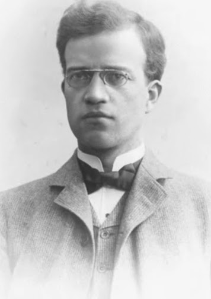

PhD Defense Ulrike
30 November 2022
Ulrike Schmidt-Kraepelin successfully defended her PhD thesis. Congratulations!!! 🎉
Thanks to committee members Felix Brandt, Piotr Faliszewski, and David Pennock!
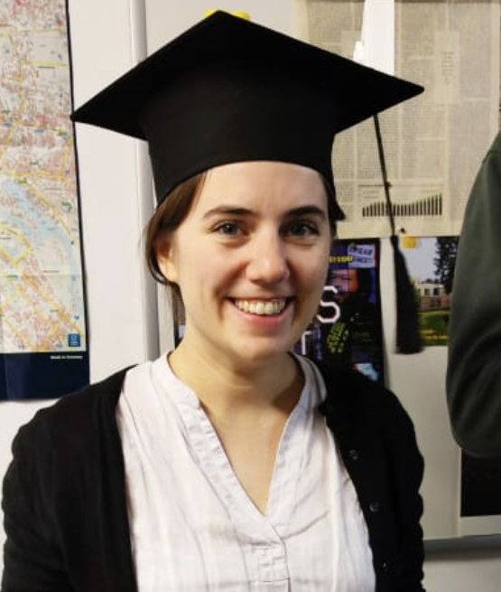
4 Papers Accepted at AAAI 2023
21 November 2022
The following four papers with ALGO members as coauthors have been accepted at AAAI 2023:
- Markus Brill, Stefan Forster, Martin Lackner, Jan Maly, and Jannik Peters. Proportionality in Approval-Based Participatory Budgeting
- Markus Brill, Hayrullah Dindar, Jonas Israel, Jérôme Lang, Jannik Peters, and Ulrike Schmidt-Kraepelin. Multiwinner Voting with Possibly Unavailable Candidates
- Xinhang Lu, Jannik Peters, Haris Aziz, Xiaohui Bei, and Warut Suksompong. Approval-Based Voting with Mixed Goods
- Théo Delemazure, Tom Demeulemeester, Manuel Eberl, Jonas Israel, and Patrick Lederer. Strategyproofness and Proportionality in Party-Approval Multiwinner Elections
Associated group member Niclas Boehmer is involved in further 3 papers.

PhD Prize for Ulrike
30 September 2022
Congratulations to Ulrike Schmidt-Kraepelin for being awarded the Dimitris N. Chorafas prize for her PhD work!
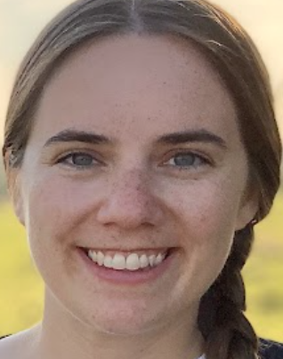
Berlin ➡️ Warwick
19 September 2022
I moved to the University of Warwick (UK). My new website is here. The rest of the group stays in Berlin.
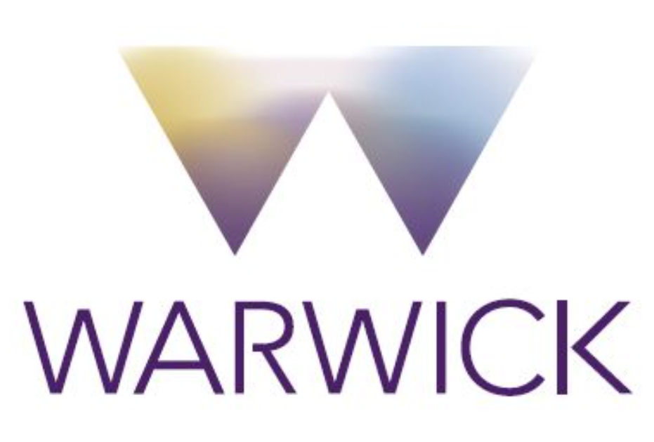
Dagstuhl Seminar “Algorithms for Participatory Democracy”
11 July 2022
I co-organized the Dagstuhl Seminar “Algorithms for Participatory Democracy”. Ulrike Schmidt-Kraepelin gave a talk.
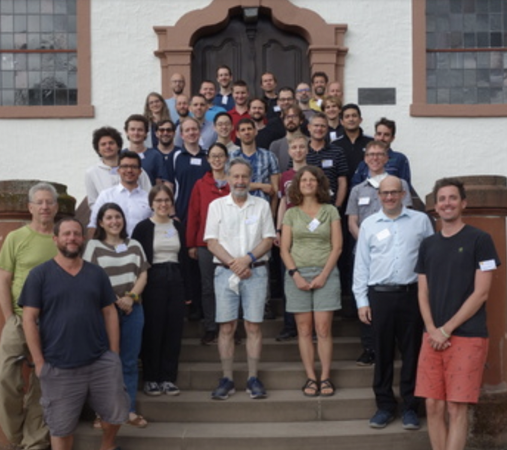
Invited Talk at Hi! PARIS Symposium
13 June 2022
I gave an invited talk at the Hi! PARIS Symposium on AI and Society (Paris, 8-10 June 2022).
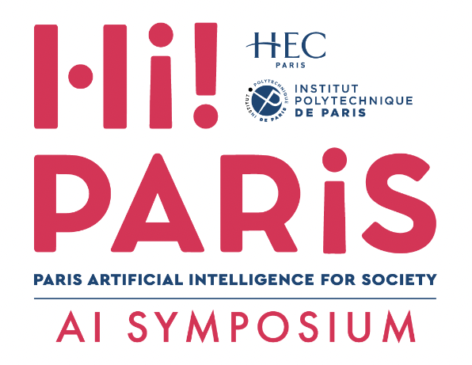
2 Papers Accepted at Mathematical Programming
10 June 2022
The following papers have been accepted for the Special Issue of Mathematical Programming, Series B, on Mathematical Optimization and Fair Social Decisions
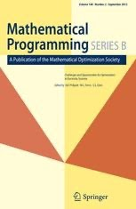
3 Papers Accepted at AAMAS 2022
19 December 2021
The following three papers with ALGO members as (co)authors have been accepted at AAMAS 2022:
- Markus Brill, Niclas Boehmer, Ulrike Schmidt-Kraepelin. Proportional Representation in Matching Markets: Selecting Multiple Matchings under Dichotomous Preferences. arxiv
- Ágnes Cseh, Jannik Peters. Three-Dimensional Popular Matching with Cyclic Preferences. arxiv
- Ágnes Cseh, Tobias Friedrich, Jannik Peters. Pareto optimal and popular house allocation with lower and upper quotas. arxiv
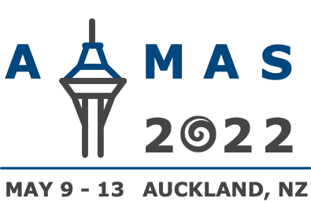
5 Papers Accepted at AAAI 2022
1 December 2021
The following five papers with ALGO members as (co)authors have been accepted at AAAI 2022:
- Markus Brill, Théo Delemazure, Anne-Marie George, Martin Lackner, and Ulrike Schmidt-Kraepelin. Liquid Democracy with Ranked Delegations. pdf
- Markus Brill, Jonas Israel, Evi Micha, and Jannik Peters. Individual Representation in Approval-Based Committee Voting.
- Edith Elkind, Piotr Faliszewski, Ayumi Igarashi, Pasin Manurangsi, Ulrike Schmidt-Kraepelin, and Warut Suksompong. The Price of Justified Representation.
- Aviram Imber, Jonas Israel, Markus Brill, and Benny Kimelfeld. Approval-Based Committee Voting under Incomplete Information. arxiv
- Jannik Peters. Online Elicitation of Necessarily Optimal Matchings.
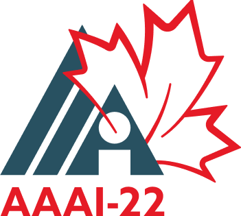